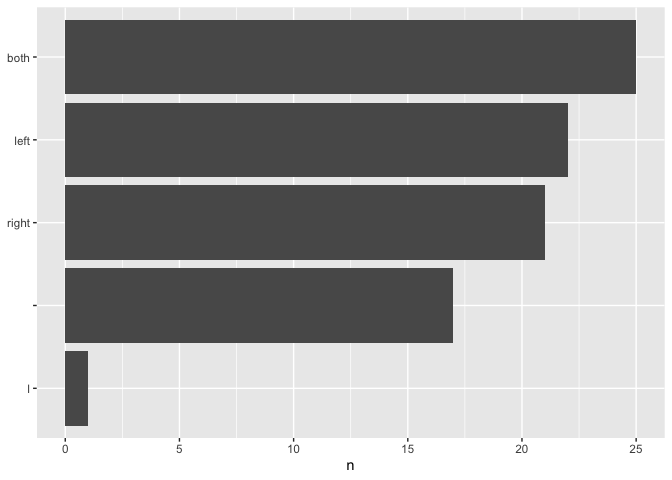
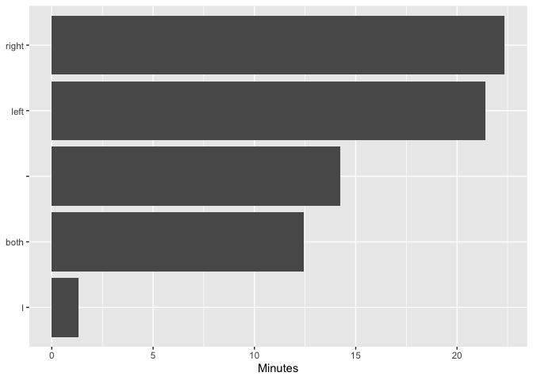
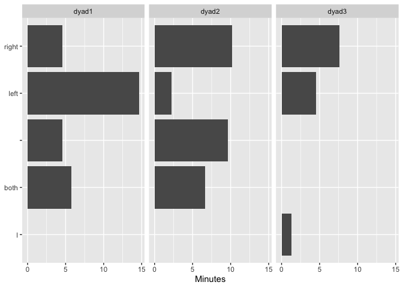
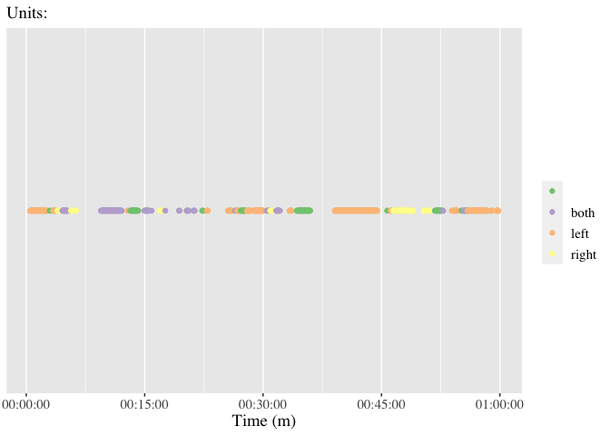

The goal of {datavyu} is to to to facilitate the use of the open-source datavyu software for the analysis of qualitative audiovisual data. This package extensively uses {datavyur} for preparing the data for summary statistics and plotting functions in this package. We do not intend to duplicate the functionality of that excellent package; instead we focus on summarizing datavyu output and preparing the output for use in other analyses.
Installation
First, install the datavyu software; see here
You can install the development version from GitHub with:
# install.packages("devtools")
devtools::install_github("tca2/datavyu")Preparing data for analysis
Please see the preparing data vignette to use the datavyu software to prepare the native .opf files for analysis here.
Exploring the columns and files
Using {datavyur} (not this package, but one that this package - {datavyu} - relies on), you can find information on all of the files (and their columns and codes) in a given directory (not run here:
datavyur::datavyu_col_search("ex-data/datavyu_output_11-16-2020_13-26")Summarizing a column
{datavyu} can help to summarize a column. It defaults to summarizing the frequency of codes for a specified column.
Note that, by default, the code name combines the column and code names; so, the hand code in the above summary would be combined with its column childhands (or parenthands) to be specified as childhands.hand or parenthands_hand:
summarize_column(column = "childhands",
code = "childhands.hand",
directory = "inst/extdata/datavyu_output_11-16-2020_13-26")
#> # A tibble: 5 x 3
#> childhands.hand n percent
#> * <chr> <dbl> <dbl>
#> 1 "both" 25 0.291
#> 2 "left" 22 0.256
#> 3 "right" 21 0.244
#> 4 "" 17 0.198
#> 5 "l" 1 0.0116We can also explore the frequencies by file by changing the by_file argument to TRUE.
We’ll be typing that folder file path a number of times. You can set an option that let the folder file path you set be used by default, though you can over-ride it any time you like.
options(directory = "inst/extdata/datavyu_output_11-16-2020_13-26")Then, use this default by changing the the by_file argument to TRUE:
summarize_column(column = "childhands",
code = "childhands.hand",
by_file = TRUE)
#> # A tibble: 11 x 4
#> file childhands.hand n percent
#> * <chr> <chr> <dbl> <dbl>
#> 1 dyad1 "" 9 0.18
#> 2 dyad1 "both" 15 0.3
#> 3 dyad1 "left" 16 0.32
#> 4 dyad1 "right" 10 0.2
#> 5 dyad2 "" 8 0.242
#> 6 dyad2 "both" 10 0.303
#> 7 dyad2 "left" 5 0.152
#> 8 dyad2 "right" 10 0.303
#> 9 dyad3 "l" 1 0.333
#> 10 dyad3 "left" 1 0.333
#> 11 dyad3 "right" 1 0.333To summarize durations (instead of frequencies) change the summary argument(defaults as "frequency") to "duration":
summarize_column(column = "childhands",
code = "childhands.hand",
summary = "duration")
#> # A tibble: 5 x 3
#> childhands.hand duration percent
#> * <chr> <chr> <dbl>
#> 1 "right" 00:22:20:078 0.311
#> 2 "left" 00:21:24:616 0.298
#> 3 "" 00:14:14:433 0.199
#> 4 "both" 00:12:25:497 0.173
#> 5 "l" 00:01:19:214 0.0184Columns of durations can also be summarized by file:
summarize_column(column = "childhands",
code = "childhands.hand",
by_file = TRUE,
summary = "duration")
#> # A tibble: 11 x 4
#> file childhands.hand duration percent
#> * <chr> <chr> <chr> <dbl>
#> 1 dyad1 "left" 00:14:39:030 0.496
#> 2 dyad1 "both" 00:05:44:939 0.195
#> 3 dyad1 "" 00:04:36:021 0.156
#> 4 dyad1 "right" 00:04:31:998 0.153
#> 5 dyad2 "right" 00:10:10:331 0.355
#> 6 dyad2 "" 00:09:38:412 0.336
#> 7 dyad2 "both" 00:06:40:558 0.233
#> 8 dyad2 "left" 00:02:11:428 0.0764
#> 9 dyad3 "right" 00:07:37:749 0.564
#> 10 dyad3 "left" 00:04:34:158 0.338
#> 11 dyad3 "l" 00:01:19:214 0.0977Ploting the results of a summary of a column
{datavyu} can also help to plot the summary of a column. Here, we save the output from summarize_column() to an object (we call this freq_summary, but it can be named whatever we like).
Then, we use this output in the function plot_column_summary():
freq_summary <- summarize_column(column = "childhands", code = "childhands.hand")
plot_column_summary(freq_summary)
This also works by file—so long as the column is summarized by file:
freq_summary <- summarize_column(column = "childhands", code = "childhands.hand",
by_file = TRUE, summary = "duration")
plot_column_summary(freq_summary)
Similarly, if the output is for the duration, rather than the frequency, the durations are plotted:
duration_summary <- summarize_column(column = "childhands", code = "childhands.hand",
summary = "duration")
plot_column_summary(duration_summary)
Like for frequency, these can be ploted by file:
duration_summary_by_file <- summarize_column(column = "childhands",
code = "childhands.hand",
summary = "duration",
by_file = TRUE)
plot_column_summary(duration_summary_by_file)
Using the pipe operator
Finally, output can be passed between functions with the pipe operator:
summarize_column(column = "childhands",
code = "childhands.hand",
summary = "duration",
by_file = TRUE) %>%
plot_column_summary()
Time series preparation and plot (in-development)
To visualize frequency of a certain coded datavyu column accounting for the duration of the video, we can use the function plot_time_series(). First we must prepare the data via saving the prep_time_series() function as an object (here we use prepared_time_series).
Note that the available files can be found using datavyur::datavyu_col_search() (described above):
prepared_time_series <- prep_time_series(column = "childhands",
code = "childhands.hand",
specified_file = "dyad1")
prepared_time_series
#> # A tibble: 1,823 x 2
#> ts code
#> * <dbl> <chr>
#> 1 29 left
#> 2 30 left
#> 3 31 left
#> 4 32 left
#> 5 33 left
#> 6 34 left
#> 7 35 left
#> 8 36 left
#> 9 37 left
#> 10 38 left
#> # … with 1,813 more rowsThe units argument defaults to “s” (seconds), but can be changed to “m” (rounds the data to minutes) or “ms” (retains datavyu’s default units, milliseconds).
We can see how using milliseconds increases the number of data points:
prepared_time_series_ms <- prep_time_series(column = "childhands",
code = "childhands.hand",
specified_file = "dyad1",
units = "ms")
prepared_time_series_ms
#> # A tibble: 1,772,038 x 2
#> ts code
#> * <int> <chr>
#> 1 28846 left
#> 2 28847 left
#> 3 28848 left
#> 4 28849 left
#> 5 28850 left
#> 6 28851 left
#> 7 28852 left
#> 8 28853 left
#> 9 28854 left
#> 10 28855 left
#> # … with 1,772,028 more rowsYour prepared_time_series_ms object can now be plotted usinf the plot_time_series() function. Here is an example of how time series data can be represented, utilizing the functions defaulted unit value of seconds:
plot_time_series(prepared_time_series)
Features in-development
- interrater
- by file
prep_time_series() - Plotting code co-occurrences with
plot_cooccurence() - Summarizing an entire file (not just a single column in a file) with
summarize_file() - Addressing a number of issues, including some that relate to the {datavyur} package
Contributing
Please note that the datavyu project is released with a Contributor Code of Conduct. By contributing to this project, you agree to abide by its terms.
pkgdown website
Because this repository is private, the {pkgdown}-generated website for this package is available only in the /docs directory. Drag the index.html file in that directory into a browser to view this site.
Acknowledgment
This material is based upon work supported by the National Science Foundation under Grant No. 1920796. Any opinions, findings, conclusions, or recommendations expressed in this material are those of the authors and do not reflect the views of the National Science Foundation.